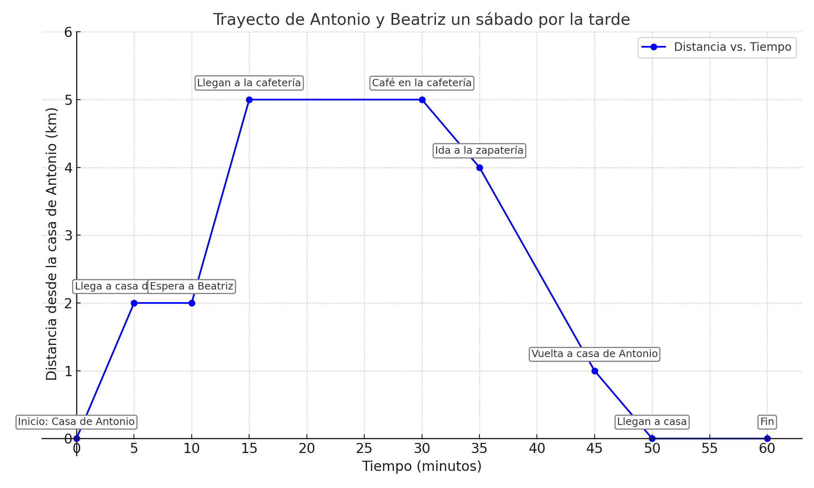
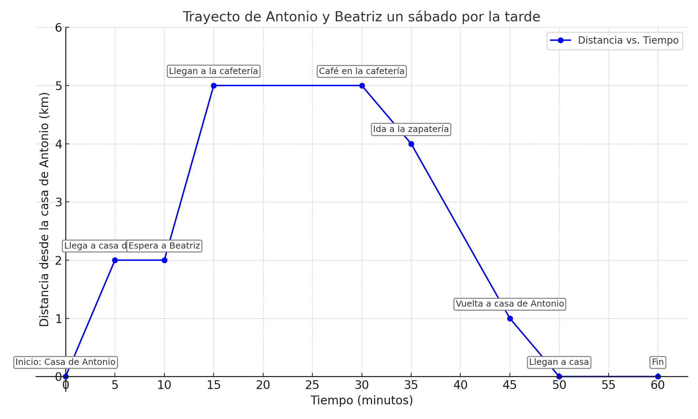

La gráfica siguiente muestra lo que ocurre un sábado por la tarde que han quedado Antonio y Beatriz para tomar café.

La gráfica siguiente muestra lo que ocurre un sábado por la tarde que han quedado Antonio y Beatriz para tomar café.

Contesta a las siguientes preguntas sobre el gráfico rellenando los huecos que faltan.
Obra publicada con Licencia Creative Commons Reconocimiento Compartir igual 4.0